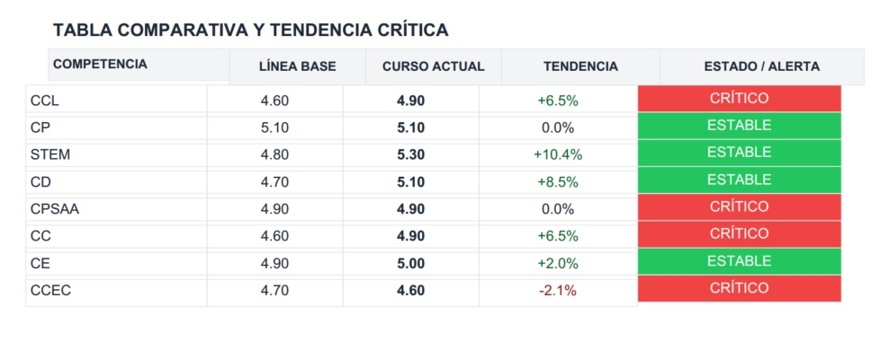
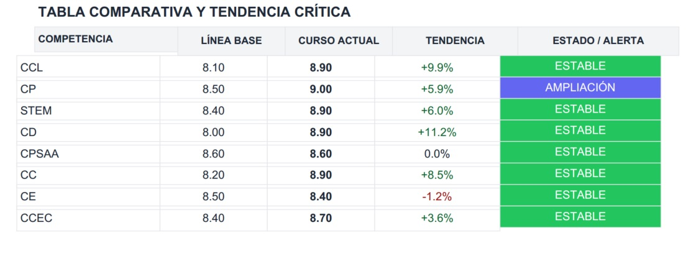
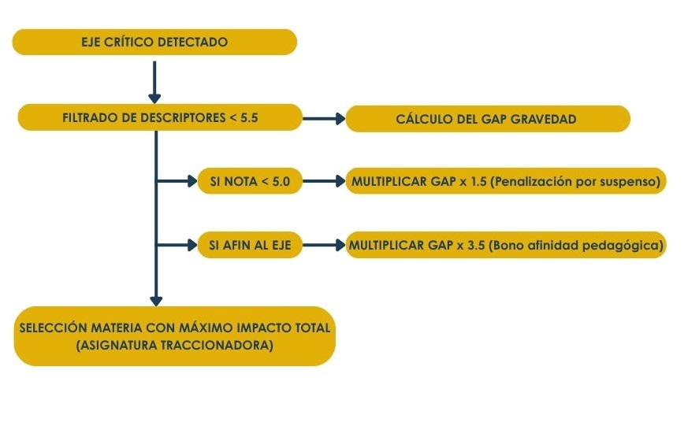
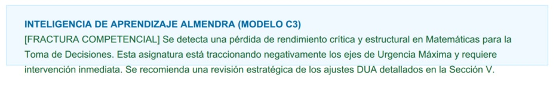
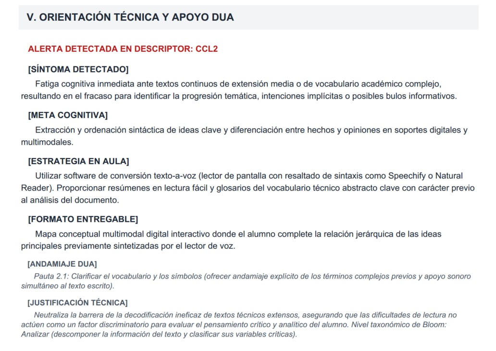
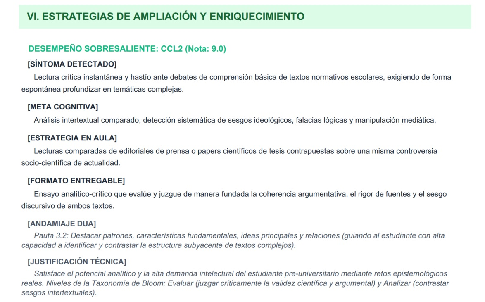

Motor de diversidad y orientación DUA
Una vez consolidada la matriz de alertas analíticas, el sistema experto procesa el perfil adaptativo del alumnado. ALMENDRA automatiza la generación de orientaciones metodológicas basadas en el Marco DUA y en un modelo de optimización pedagógica que localiza las áreas de intervención prioritarias.
Catálogo base e ingesta automatizada de necesidades
ALMENDRA integra en su base de datos local un catálogo de pautas asociadas a las diferentes necesidades específicas de apoyo educativo (ACNEAE). Al detectar un perfil de aprendizaje específico en la fase de ingesta (ej., un alumno con diagnóstico de TDAH, el sistema realiza una extracción masiva de las adaptaciones de acceso y metodológicas correspondientes.
Estas sugerencias se desglosan de manera sistemática bajo los tres principios rectores del Diseño Universal para el Aprendizaje:
- Mecanismos de Representación (Acceso al Aprendizaje): Directrices específicas orientadas a la personalización de la presentación de los estímulos e informaciones en el aula (ej., andamiaje visual, textos guiados).
- Mecanismos de Acción y Expresión (Metodología Operativa): Alternativas procedimentales para que el estudiante exteriorice la consolidación de sus aprendizajes (ej., desgloses secuenciales paso a paso o modelos de evaluación no escrita).
- Mecanismos de Implicación (Soporte Motivacional): Estrategias de aula diseñadas para regular el interés, la persistencia y la autorregulación cognitiva.
Algoritmo de criticidad competencial
Para evitar la saturación diagnóstica y optimizar la respuesta educativa, el software restringe la propuesta de intervenciones urgentes a aquellos descriptores y ejes transversales que verifiquen una doble condición:
- Criterio de Deriva Crítica: El descriptor operativo o eje competencial registra una caída o contracción igual o superior al 25% en comparación con su línea base histórica.
- Criterio de Insuficiencia: La calificación normalizada proyectada en el periodo actual para dicho eje es inferior a la nota de corte de 5.0 (calificación límite del suspenso técnico), con total independencia de su trayectoria en años anteriores.
Cualquier indicador que sature de forma positiva alguna de estas dos condiciones es marcado de manera automática con un vector de intervención en el informe final.

Algoritmo de ampliación competencial
Del mismo modo para potenciar el desarrollo del talento y optimizar la respuesta educativa, el software restringe la propuesta de estrategias de enriquecimiento a aquellos descriptores y ejes transversales que verifiquen una doble condición:
- Criterio de Deriva de Ampliación: El descriptor operativo o eje competencial registra un incremento o expansión igual o superior al +15% en comparación con su línea base histórica.
- Criterio de Excelencia: La calificación normalizada proyectada en el periodo actual para dicho eje es igual o superior a la nota de corte de 9.0 (calificación límite del sobresaliente técnico), con total independencia de su trayectoria en años anteriores.
Cualquier indicador que sature de forma positiva alguna de estas dos condiciones es marcado de manera automática con un vector de ampliación en el informe final.

Aislamiento de la asignatura traccionadora
Una vez mapeado un eje competencial en estado crítico (ej., STEM), ALMENDRA ejecuta un subalgoritmo de diagnóstico inverso para identificar la disciplina escolar específica que ejerce la mayor resistencia o caída del promedio general, designándola como Asignatura Traccionadora. El refuerzo focalizado en dicha materia servirá de palanca matemática para elevar el desempeño del eje.
El cálculo del impacto total de cada materia se computa de acuerdo con la siguiente secuencia lógica:

- Filtrado de Descriptores con Déficit: El software aísla los descriptores operativos del eje analizado donde el estudiante muestre un retroceso o registre un valor por debajo de 5.5.
- Cómputo del GAP de Gravedad: Se calcula la distancia escalar que le resta al alumno para alcanzar la excelencia en dicha materia, restando su nota actual del máximo teórico:
- Penalización por Insuficiencia: Si la asignatura se encuentra en condición de suspenso técnico (Calificación < 5.0), el diferencial de gravedad se multiplica por un factor de corrección de 1.5.
- Bono de Afinidad Pedagógica: Si la materia pertenece al núcleo o familia natural del eje competencial afectado (ej., Matemáticas para el eje STEM o Lengua Castellana para CCL), el impacto se amplifica multiplicándose por un coeficiente de 3.5.
La asignatura que registre el valor más elevado tras el sumatorio de estas funciones es aislada y catalogada en el informe como el vector diana donde concentrar indicaciones en el informe diagnóstico.

Trazabilidad normativa y eliminación de alucinaciones
La producción de los informes diagnósticos no es generada mediante modelos de Inteligencia Artificial generativa, salvaguardando la integridad del ecosistema de manera escrupulosa con respecto a la protección de datos.
El sistema realiza un cruce determinista tripartito basado en:
- El historial académico real importado.
- La matriz de pesos curriculares de la base de datos local.
- La matriz de afinidad pedagógica interna que clasifica las asignaturas en categorías troncales (Ciencias, Lingüística, Sociales, Artística y Transversal).
- Los bloques semánticos y las recomendaciones específicas se extraen directamente de la biblioteca pedagógica integrada en la aplicación. Esta librería cuenta con un mapeo exhaustivo del Perfil de salida LOMLOE estructurado por etapas diferenciadas (Educación Primaria como competencia base y Educación Secundaria como meta de consolidación).
Al vincular el motor de cálculo directamente con esta biblioteca cerrada, ALMENDRA asegura una rigurosidad normativa absoluta, garantizando que toda propuesta de intervención se ajuste a las recomendaciones incluidas introduciendo un valor diferencial clave: la capacidad de aplicar actualizaciones modulares y mejoras de contenido "a la carta", garantizando la evolución del sistema de manera autónoma y controlada.


Estructura y lógica de las píldoras de intervención DUA
Las prescripciones incluidas en los informes diagnóstico de ALMENDRA (tanto de orientación técnica y apoyo como de ampliación y enriquecimiento) se articulan mediante una ficha de seis variables interconectadas. Este diseño traduce el dato numérico en una intervención didáctica concreta:
- [SÍNTOMA DETECTADO] (Diagnóstico Observacional): Traduce la métrica cuantitativa (alerta de caída o desempeño sobresaliente) en una manifestación conductual y cognitiva observable en el aula (ej. fatiga cognitiva o hastío ante tareas simples).
- [META COGNITIVA] (Objetivo): Define con precisión la destreza o proceso mental exacto que se persigue con la intervención, delimitando el foco pedagógico prioritario.
-
[ESTRATEGIA EN AULA] (Metodología / Acción Didáctica): Proporciona al docente la pauta instruccional directa y las herramientas de mediación necesarias (ej. lectores de texto a voz, glosarios previos, análisis de fuentes contrapuestas).
-
[FORMATO ENTREGABLE] (Producto Evaluable): Concreta el tipo de evidencia de aprendizaje que debe generar el alumnado (ej. mapa conceptual interactivo o ensayo crítico), adaptando la vía de expresión según su perfil.
-
[ANDAMIAJE DUA] (Pauta Universal de Inclusión): Ancla la propuesta en las directrices del Diseño Universal para el Aprendizaje (especificando la pauta DUA correspondiente) para derribar barreras de acceso o proporcionar retos de representación y comprensión avanzada.
-
[JUSTIFICACIÓN TÉCNICA] : Fundamenta pedagógicamente por qué se aplica dicha medida y sitúa la actividad en el nivel cognitivo formal correspondiente según la Taxonomía de Bloom (ej. Analizar o Evaluar), aportando rigor ante inspección y coordinación docente.